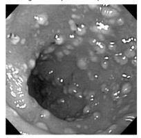

Questão 1 · Antibioticoprof ilaxia Cirúrgica · 4000146589Uma paciente com 25 anos de idade foi submetida à ressecção eletiva de segmento de cólon sigmoide de cerca de 10 cm devido à estenose intestinal ocasionada por endometriose pélvica. No pré-operatório, foi realizado apenas preparo de cólon distal com clister glicerinado. Durante a cirurgia, com duração de 4 horas, não houve extravasamento de fezes no momento da abertura colônica e foi realizada anastomose primária com o inabsorvível mono lamentar. Para esse caso, a antibioticoprofilaxia adequada deve ser feita
A no momento da incisão com dose única.
B no momento da incisão, com repetição da dose a cada 2 a 4 horas e manter por 24 horas após a cirurgia.
C até uma hora antes da incisão cirúrgica com repetição da dose a cada 2 a 4 horas e manter por 48 horas após a cirurgia.
D até uma hora antes da incisão cirúrgica com repetição da dose a cada 2 ou 4 horas apenas durante o ato operatório.
Questão 2 · Inf ecção de corrente sanguínea ICS · 4000146171Mulher de 59 anos foi admitida em unidade de terapia intensiva devido à acidente vascular cerebral. No 8º dia de internação evoluiu com febre e leucocitose. Não apresentou piora ventilatória e a radiogra a de tórax era normal. Tinha como dispositivos o tubo orotraqueal, sonda nasoenteral, cateter venoso central em veia jugular D e sonda vesical de demora, todos inseridos desde a admissão. As duas amostras de hemocultura apresentaram crescimento de Staphylococcus aureus resistente à oxacilina (MRSA). Em relação a esse caso, assinale a alternativa que apresenta a conduta MAIS ADEQUADA:
A O diagnóstico de infecção de corrente sanguínea associada ao cateter somente pode ser realizado se houver eritema ou saída de secreção purulenta no sítio de punção venosa.
B A infecção de corrente sanguínea associada ao cateter venoso central é o diagnóstico mais provável, e está recomendada a retirada do cateter com envio para cultura e introdução do antimicrobiano. Por se tratar de MRSA, é recomendada a coleta de hemoculturas de controle após 72 horas de terapia eficaz.
C Trata-se de infecção de corrente sanguínea associada ao cateter venoso central. A conduta nesse momento é apenas a introdução do antimicrobiano e coleta de hemoculturas de controle após 72 horas de terapia eficaz.
D A infecção de corrente sanguínea associada ao cateter venoso central é o diagnóstico mais provável, e apenas a retirada do cateter com envio para cultura é a conduta recomendada para esse momento.
Questão 3 · Medidas Gerais de Prevenção de Inf ecção do Sítio Cirúrgico ISC · 4000146157A infecção do sítio cirúrgico pode contribuir para importante morbiletalidade e custos hospitalares elevados. No que tange à prevenção e controle da infecção de sítio cirúrgico, assinale a alternativa CORRETA:
A Há uma forte recomendação favorável à irrigação da cavidade peritoneal e da ferida operatória com uma solução contendo antibióticos em cirurgias limpas e contaminadas, pois essa conduta é capaz de reduzir o risco de infecção de sítio cirúrgico.
B A administração com finalidade profilática da primeira dose endovenosa da cefazolina deve ser realizada 4 horas antes da incisão da pele e mantida durante 24 horas, pois é importante que seu nível tecidual seja adequadamente elevado para minimizar o risco de infecção de sítio cirúrgico.
C O emprego de dispositivos de aquecimento ativo do paciente durante a realização do procedimento cirúrgico é útil para manter a normotermia e redução das taxas de infecção de sítio cirúrgico.
D O emprego de fios de sutura multifilamentares impregnados com antimicrobianos (ex. poliglactina com triclosan é ineficaz para redução da prevalência de infecção de sítio cirúrgico em comparação aos fios sem revestimento antimicrobiano em cirurgias abdominais.
Questão 4 · Antibioticoprof ilaxia Cirúrgica · 4000145744Em relação à pro laxia sistêmica antimicrobiana para prevenção de Infecção do Sítio Cirúrgico (ISC), assinale a alternativa correta.
A A classificação da ferida cirúrgica (limpa, potencialmente contaminada, contaminada, infectada) é o único critério a ser considerado para determinar o emprego do antibiótico profilático.
B Antibióticos profiláticos só deverão ser administrados em cirurgias contaminadas.
C Os antibióticos devem ser administrados pré-operatoriamente 1 dia antes da cirurgia.
D Antibiótico profilático pode ser utilizado em cirurgias limpas, caso o paciente possua uma prótese.
E Nenhuma das anteriores.
Questão 5 · Inf ecção por C dif f icile · 4000145550Em relação à colite pseudomembranosa, assinale a alternativa ERRADA:
A Os esporos do microorganismo responsável pela etiologia tem sobrevida efêmera quando fora do organismo humano
B O microorganismo pode ser encontrado em fezes de pacientes assintomáticos
C O teste ELISA para as toxinas A e B nas fezes tem altas sensibilidade e especificidade
D Pode ocorrer translocação das toxinas para a circulação portal
Questão 6 · Prevenção de Inf ecção da Ferida Operatória Inf ecção do Sítio Cirúrgico ISC · 4000145484Em relação às Infecções do sítio cirúrgico, assinale a alternativa CORRETA.
A A hipercolesterolemia é importante fator de risco para infecção do sítio cirúrgico
B A hipotermia intraoperatória moderada a grave pode estar associada a maior ocorrência de infecção do sítio cirúrgico
C A permanência de dreno cirúrgico constitui justificativa para se prolongar o uso de antibiótico profilático
D Infecção que surge dentro das primeiras 72 horas não é considerada como sendo do sítio cirúrgico
Questão 7 · Medidas Gerais de Prevenção de Inf ecção do Sítio Cirúrgico ISC · 4000145138Diferentes condições clínicas são conhecidas por aumentarem o risco de infecção nos pacientes no período pós- cirúrgicos. Não pode ser um perfil considerado como portador de risco aumentado para infecção pós-operatória:
A Mulher com índice de massa corporal de 40kg/m2 submetida à colectomia esquerda
B Homem apresentando glicemia de jejum de 380mg% submetido a colecistectomia de urgência
C Mulher, 30 anos de idade, portadora de lúpus em corticoterapia submetida à apendicectomia videolaparoscópica
D Homem, 25 anos de idade, submetido a hernioplastia inguinal
Questão 8 · Transmissão · Inf ecções relacionadas à assistência à saúde IRAS · 4000144710Você é o médico responsável por admitir um paciente com tuberculose pulmonar bacilífera em uma unidade de internação clínica. Qual a forma de transmissão da tuberculose neste ambiente, quais as características do sistema de ar do quarto e quais equipamentos de proteção individual devem ser utilizados pelo profissional ao entrar no quarto, respectivamente?
A Contato e gotículas. Sistema de ar condicionado com pressão negativa em relação ao corredor e com trocas de ar e filtração de acordo com as normastécnicas. Máscara tipo cirúrgica de três camadasfiltrantes, avental de procedimento e luvas descartáveis.
B Gotículas. Sistema de ar condicionado com pressão positiva em relação ao corredor e com trocas de are filtração de acordo com as normas técnicas. Máscara tipo cirúrgica de três camadasfiltrantes, avental de procedimento, protetor facial e luvas descartáveis.
C Aerossol. Sistema de ar condicionado com pressão negativa em relação ao corredor e com trocas de ar e filtração de acordo com as normas técnicas. Respirador (máscara) PFF2 ou N95.
D Contato e aerossol. Sistema de ar condicionado com pressão negativa em relação ao corredor e com trocas de ar e filtração de acordo com as normastécnicas. Respirador (máscara) PFF2 ou N95, avental de procedimento, protetor facial e luvas descartáveis.
Questão 9 · Medidas Gerais de Prevenção de Inf ecção do Sítio Cirúrgico ISC · 4000143541Paciente masculino portador de câncer de cólon, 62 anos, diabético. Será submetido a colectomia esquerda eletivamente. Não apresentou perda de peso, mas apresenta 30% de hematócrito, 130 mg/dl de glicemia. Proteínas séricas normais. Quanto à possibilidade de infecção no pós-operatório é incorreto afirmar:
A A glicemia está aumentada, aumentando o risco de infecção, mas deverá ser controlada com insulina regular, não havendo necessidade da suspensão da cirurgia.
B O paciente deverá utilizar esquema antibiótico profilático somente no ato operatório, mesmo apresentando mais de 3 fatores de risco para infecção.
C Por se tratar de ferida potencialmente contaminada está indicada a profilaxia antimicrobiana.
D A febre no primeiro dia de pós operatório pode estar associada a atelectasia.
E A tricotomia, o preparo de cólon, e antibióticos de largo espectro por 48 horas no pós operatório são indispensáveis para diminuir o risco de infecção pós-operatória.
Questão 10 · Antibioticoprof ilaxia Cirúrgica · 4000143540Paciente de 45 anos, hipertenso controlado com medicamentos, será submetido a herniorra a inguinal esquerda com colocação de prótese de polipropileno. Apresenta abscesso dentário, chega ao consultório e faz diversas perguntas ao cirurgião, qual a única afirmação que o cirurgião não poderia fazer?
A A cirurgia terá de ser postergada para que o abscesso dentário seja tratado.
B A tricotomia deverá ser somente na região da incisão, e só será realizada minutos ant es da cirurgia.
C O paciente tomará banho horas antes da cirurgia.
D O paciente usará por 2 dias antibiótico em casa no pós operatório.
E O jejum pré-operatório deve ser de 8h para refeições sólidas.
Questão 11 · Agentes etiológicos · 4000141806Os cateteres vasculares que se correlacionam com maior risco de desenvolvimento de infecção são os cateteres venosos centrais, cujo uso é bastante frequente no ambiente hospitalar. Esses dispositivos rompem a barreira mecânica da pele, favorecendo a penetração de microrganismos diretamente na corrente sanguínea. Qual o principal causador desse tipo de infecção?
A Estafilococos coagulase-negativa
B Cocos gram-negativos
C Bacilos gram-negativos
D Estafilococos Aureus
E KPC
Questão 12 · Antibioticoprof ilaxia Cirúrgica · 4000140660Entre as condutas inerentes aos cuidados pré-operatórios do paciente cirúrgico eletivo, visando ao melhor resultado pós operatório, tem-se o conceito da antibioticoterapia pro lática. Um cirurgião prepara seu paciente portador de câncer do cólon esquerdo para realizar uma hemicolectomia esquerda e prescreve um esquema de antibioticoterapia profilática. Essa prescrição deve respeitar o protocolo mais aceito atualmente, que é
A iniciar o uso do antibióbico via endovenosa 3 horas antes do ato cirúrgico.
B injetar o antibiótico na indução anestésica.
C administrar cefalosporina de 1ª geração.
D começar o uso do antibiótico na cirurgia e mantê-lo por 24 a 48 horas.
Questão 13 · Antibioticoprof ilaxia Cirúrgica · 4000138064É comprovada que a pro laxia do antibiótico no pré-operatório reduz o risco de infecção de sítio cirúrgico pós-operatórias em muitas circunstâncias. Assinale a alternativa correta sobre a antibioticoprofilaxia.
A Geralmente é indicada na colecistectomia laparoscópica eletiva.
B Previne infecções nosocomiais pós-operatórias.
C É mandatória nas cirurgias limpas.
D Se não administrada de forma adequada, é ineficaz e pode ser prejudicial.
E Não é indicada quando o procedimento envolve secção óssea,
Questão 14 · Inf ecções relacionadas à assistência à saúde IRAS · 4000137419Pode-se a rmar que a causa mais frequente de transmissão das viroses respiratórias comuns de pacientes para pro ssionais de saúde é:
A higienização inadequada das mãos.
B uso inadequado de máscaras N95.
C não prescrição de antibioticoprofilaxia.
D acidentes com espécimes biológicos.
Questão 15 · Tratamento · Inf ecção por C dif f icile · 4000137392Homem, 69 anos, etilista, em situação de rua, interna no hospital com febre e tosse purulenta. Feito diagnóstico de abscesso pulmonar é iniciado tratamento com clindamicina venosa. No 5o dia, desenvolve diarreia aquosa (sem muco ou sangue), novo pico febril e dor abdominal, atribuídos a causa infecciosa. O agente etiológico provavelmente envolvido é:
A Staphylococcus aureus.
B Entamoeba histolytica.
C Escherichia coli.
D Clostridium difficille.
Questão 16 · Inf ecção por C dif f icile · 4000133704Mulher procura o médico com queixas de diarreia com muco, pus e sangue. Refere uso de antibiótico há 20 dias para tratar infecção respiratória, mas não lembra o nome da medicação. O médico suspeita de colite pseudomembranosa. A classe de drogas mais recentemente relacionada a essa patologia é:
A penicilinas + inibidor de penicilinase .
B carbapenêmicos.
C macrolídeos.
D quinolonas.
Questão 17 · Inf ecções relacionadas à assistência à saúde IRAS · 4000132797Sobre a aquisição e a precaução contra infecção hospitalar, assinale a alternativa correta.
A Recipientes para coleta de perfurocortantes somente devem ser usados quando se tem certeza de que o material está contaminado.
B A precaução de contato, quando indicada, e a correta higienização das mãos têm baixo impacto no controle das infecções hospitalares.
C São poucas as bactérias capazes de sobreviver em superfícies e instrumentos do ambiente hospitalar, como monitores, bombas de infusão e estetoscópio.
D O ambiente hospitalar é um grande reservatório de bactérias resistentes, constituindo em uma fonte de infecção para os pacientes.
Questão 18 · Osteomielite · Inf ecção por C dif f icile · 4000130963Paciente de 65 anos, internada na enfermaria de ortopedia, está em uso de cipro oxacino + clindamicina há quatro semanas para tratamento de osteomielite em pé diabético. Há 48 horas, apresenta febre baixa, dor abdominal difusa, diarreia aquosa (> três episódios/dia), porém, sem sinais de invasividade. Ao exame: PA 140x90mmhHg, FC 105bpm, Tax. 37,92C. Abdome algo distendido, doloroso a palpação super cial e profunda difusamente, peristalse presente, sem descompressão dolorosa. Laboratório do dia: leucócitos 25.000 com 8% de bastões, 0% de eosinó los, ureia de 80mg/dL, creatinina 3,5mg/dL (valor prévio 1,5mg/dL), K primeira escolha a ser instituído é:
A Fidaxomicina IV
B Metronidazol IV + Vancomicina VO
C Colectomia total
D Transplante de microbiota fecal
E Piperacilina + Tazobactam
Questão 19 · Antibioticoprof ilaxia Cirúrgica · 4000129680Assinale a alternativa correta a respeito da antibioticoprofilaxia cirúrgica.
A Deve ser mantida por via parenteral, durante 7 dias, em cirurgias de grande porte.
B Sempre deve ser feita em monoterapia com cobertura para anaeróbios.
C A dose de antibiótico deve ser repetida em cirurgias de longa duração.
D Nunca deve ser administrada pelo mesmo acesso venoso dos relaxantes musculares sob risco de perda da eficácia.
Questão 20 · Antibioticoprof ilaxia Cirúrgica · 4000129481Após 1 (uma) hora do início de uma gastrectomia total com linfadectomia a D2 por um adenocarcinoma moderadamente diferenciado em fundo gástrico, houve laceração da veia esplênica e volumoso sangramento. O paciente foi estabilizado com solução cristaloide e concentrado de hemácias e a cirurgia ui normalmente com previsão de duração de 3 horas. Qual conduta em relação a antibioticoprofilaxia deve ser adotada pela equipe?
A Reaplicar Cefazolina agora.
B Manter Cefazolina de 8/8h por 24 horas.
C Reaplicar Cefazolina 4 horas após a indução.
D Repetir Cefazolina se a cirurgia durar 4 horas.
Questão 21 · Medidas Gerais de Prevenção de Inf ecção do Sítio Cirúrgico ISC · 4000128413São fatores de risco de infecção de ferida operatória. exceto:
A Idade.
B Diabetes.
C Obesidade.
D Cirurgia por neoplasia gastrointestinal
E Internação hospitalar prévia, com alta há mais de 3 meses.
Questão 22 · Oxazolidinonas · Inf ecção por C dif f icile · 4000117571As oxazolidinonas são uma classe nova de agentes antimicrobianos sintéticos não relacionadas a outras classes já conhecidas, sendo bem indicadas nos seguintes casos, EXCETO:
A Infecção cutânea complicada por Staphylococcus aureus resistente à meticilina (MRSA).
B Pneumonia por Pneumococo resistente à Penicilina.
C Infecção por Enterococo resistente à Vancomicina.
D Infecção pelo Mycobacterium tuberculosis.
E Primeira escolha no tratamento de Colite por Clostridium difficile.
Questão 23 · Inf ecções relacionadas à assistência à saúde IRAS · 4000106346Em relação às infecções hospitalares, é correto afirmar:
A A lavagem das mãos antes e após a manipulação dos pacientes é a melhor maneira dese prevenir infecções cruzadas nas enfermarias cirúrgicas.
B A realimentação precoce do paciente cirúrgico é uma das medidas que aumentam a incidência de infecção pós- operatória, por predispor a pneumonia aspirativa.
C A antibioticoterapia profilática deve ser mantida por pelo menos 48 horas, no pós-operatório de cirurgia eletiva, para conseguir reduzir a incidência de infecções hospitalares.
D A posição elevada do paciente entre 30 e 45 graus não interfere na incidência de pneumonia associada a ventilação mecânica.
E O
Questão 24 · Diagnóstico · 4000099536Lactente, 10 meses, com febre, tosse e coriza há 4 dias e aparecimento de exantema maculopapular morbiliforme com início nas orelhas descendo para o tronco hoje. Vacinas: todas as indicadas até os 6 meses de idade. Exame físico: T= 39ºC; Orofaringe: lesões de 2 a 3 mm de diâmetro, discretamente elevadas, de cor branca com base eritematosa, localizadas na região interna da mucosa oral. AO INTERNAR, DEVERÁ SER ESTABELECIDA A SEGUINTE PRECAUÇÃO:
A Padrão.
B Aerossóis.
C Gotículas.
D Contato.
Questão 25 · Inf ecção por C dif f icile · 4000086513A colite causada pelo Clostridium difícile geralmente ocorre entre quatro e nove dias depois de iniciado o antibiótico. Os sintomas dessa infecção podem ser diarreia aquosa, dor, distensão abdominal e febre. Nesse caso, o tratamento deve ser realizado com:
A clindamicina em idosos
B colectomia em crianças
C imunoglobulina venosa nos casos refratários
D transplante de microbiota fecal nos casos recorrentes
Questão 26 · Antibioticoprof ilaxia Cirúrgica · 4000086454Em relação à profilaxia antimicrobiana nas cirurgias, é correto afirmar que:
A na apendicite está indicado antifúngico de amplo espectro
B não está indicada na colecistectomia videolaparoscópica eletiva
C não está indicada a cefazolina nas cirurgias vasculares com stent
D na cirurgia cardíaca deve-se usar cefuroxime em caso de alergia à penicilina
Questão 27 · Antibioticoprof ilaxia Cirúrgica · 4000077064Homem, vítima de trauma contuso, com possíveis múltiplas fraturas de costelas, foi submetido a exame físico de pneumotórax esquerdo. Devido à dessaturação crescente de oxigenação do paciente, a toracostomia à esquerda foi realizada em condições subótimas. Nesse caso, a antibioticoprofilaxia a ser realizada consiste em:
A ciprofloxacina
B ceftriaxone
C cefazolina
D cefepime
Questão 28 · Antibioticoprof ilaxia Cirúrgica · 4000075483A pro laxia antibiótica mais adequada para pacientes submetidos à gastrectomia subtotal e reconstrução do trânsito com gastro-jejunostomia em Y de Roux, é:
A cefalosporina de 1ª geração
B quinolona de 2ª geração
C aminoglicosídeo e metronidazol
D não há indicação para antibioticoprofilaxia neste procedimento
Questão 29 · Prevenção · 4000074722A Organização Mundial de Saúde (OMS) criou o Programa de Segurança do Paciente para minimizar eventos adversos evitáveis. Qual das metas da OMS instituídas pelo Programa Nacional de Segurança do Paciente, pelo Ministério da Saúde, no Brasil, apresenta maior impacto na prevenção da infecção, relacionada a cateter venoso central de longa permanência?
A Realização do procedimento em sala específica.
B Uso de luvas, máscara e avental descartável pelo médico.
C Realização de procedimento com visualização ultrassonográfica.
D Higienização das mãos.
Questão 30 · Medidas Gerais de Prevenção de Inf ecção do Sítio Cirúrgico ISC · 4000073975Diferença entre assepsia e antissepsia?
A Antissepsia é o conjunto de medidas adotadas para impedir a introdução de agentes patogênicos no organismo. Assepsia consiste na utilização de produtos (microbicidas ou microbiostáticos sobre a pele ou mucosa com o objetivo de reduzir os micro-organismos em sua superfície.
B Assepsia é o conjunto de medidas adotadas para impedir a introdução de agentes patogênicos no organismo. Antissepsia consiste na utilização de produtos (microbicidas ou microbiostáticos sobre a pele ou mucosa com o objetivo de reduzir os micro-organismos em sua superfície.
C Significam a mesma coisa (sinônimos).
D Antissepsia é o emprego de antibioticoterapia profilática a fim de evitar sepse no pós-operatório. Assepsia é dito quando a antibioticoterapia profilática surtiu o efeito desejado e conseguimos atingir o objetivo de evitar sepse.
Questão 31 · Antibioticoprof ilaxia Cirúrgica · 4000073968A antibioticoterapia pós-operatória nas cirurgias ELETIVAS de cólon deverá ser empregada:
A Sempre, em todos os casos.
B Analisando caso a caso e, uma vez que opte em prescrever, o Cirurgião deverá se orientar pelo perfil da microbiota do hospital consultando a CCIH do local.
C Nunca, independente do caso.
D Empiricamente.
Questão 32 · Antibioticoprof ilaxia Cirúrgica · 4000062938Dos procedimentos cirúrgicos citados abaixo, não tem indicação de antibioticoprofilaxia:
A Histerectomia vaginal.
B Anastomose intestinal.
C Cesariana.
D Traqueostomia.
Questão 33 · Inf ecções relacionadas à assistência à saúde IRAS · Aspectos Clínicos · 4000061895Dentre as doenças abaixo, com acometimento ocorrendo em faixa etária pediátrica, a indicação absoluta de leito de isolamento, em caso de internação hospitalar, ocorre no caso de:
A Tuberculose pulmonar
B Hepatite A
C Varicela
D Parotidite endêmica
Questão 34 · Antibioticoprof ilaxia Cirúrgica · Medidas Gerais de Prevenção de Inf ecção do Sítio Cirúrgico ISC · 4000061836Sobre as infecções em áreas cirúrgicas, analise as afirmativas a seguir: I- A manutenção da normotermia e da fração de oxigênio inspirado (FiO₂) em 80% ou mais, durante a cirurgia reduz a taxa de infecção do sítio operatório. II- O paciente deve receber antibiótico profilático venoso até no máximo 30 minutos após iniciado o procedimento. III- O IV- A raspagem prévia dos pelos abdominais diminui a possibilidade de infecção. Estão CORRETAS as afirmativas:
A I, II e III apenas.
B II e III apenas.
C I, III e IV apenas.
D I e III apenas.
Questão 35 · Prevenção de Inf ecção da Ferida Operatória Inf ecção do Sítio Cirúrgico ISC · 4000058111Inf ecção de Ferida Operatória Inf ecção de Sítio Cirúrgico ISC São fatores de risco para infecção pós-operatória, exceto:
A Drenos.
B Procedimento de emergência.
C Profilaxia antibiótica.
D Hospitalização pré-operatória prolongada.
E Hipotermia.
Questão 36 · Antibioticoprof ilaxia Cirúrgica · 4000050157Sobre o uso de antibiótico profilático no paciente cirúrgico, é INCORRETO afirmar:
A O uso do antibiótico deve ser seguro para o paciente.
B O antibiótico deve ter um espectro amplo de cobertura antimicrobiana.
C O antibiótico deve ser usado quando a cirurgia for limpa-contaminada ou contaminada.
D O antibiótico deve ser administrado uma hora antes da cirurgia.
E A administração do antibiótico deve ser mantida por pelo menos 72 h.
Questão 37 · Prevenção de Inf ecção da Ferida Operatória Inf ecção do Sítio Cirúrgico ISC · 4000050140Infecção cirúrgica inclui qualquer infecção que acomete o paciente cirúrgico. A respeito do assunto, considere as seguintes afirmativas: 1. Idade acima de 65 anos é considerada fator de risco. 2. Hiperglicemia prejudica a imunidade celular do paciente cirúrgico. 3. Transfusão sanguínea está associada a aumento da imunidade contra as infecções. 4. Hipotermia é considerada um mecanismo de proteção conta infecção cirúrgica. Assinale a alternativa correta.
A Somente a afirmativa 2 é verdadeira.
B Somente as afirmativas 1 e 2 são verdadeiras.
C Somente as afirmativas 3 e 4 são verdadeiras.
D Somente as afirmativas 1, 3 e 4 são verdadeiras.
E As afirmativas 1, 2, 3 e 4 são verdadeiras.
Questão 38 · Antibioticoprof ilaxia Cirúrgica · 4000040176Dentre os itens abaixo, em qual cirurgia NÃO há indicação de antibioticoprofilaxia
A Hernioplastia inguinal com tela de marlex
B Ressecção do intestino delgado
C Gastroplastia para obesidade mórbida
D Fundoplicatura
Questão 39 · Classif icação da Cirurgia Conf orme Grau de Contaminação · 4000040022Prevenção de Inf ecção da Ferida Operatória Inf ecção do Sítio Cirúrgico ISC As infecções do sítio cirúrgico (ISC) são entidades que merecem bastante relevância por representarem a complicação mais comum dos procedimentos cirúrgicos e por corresponderem, em média, a 15% de todas as infecções hospitalares. Identi cá-las, classi cá-las e preveni-las são medidas necessárias para evitar suas consequências, portanto, considerando esses fatos, identifique a alternativa que melhor se encaixe nestes pontos:
A Fatores consideráveis de risco para as ISC, maior duração do ato operatório, tabagismo e imunossupressão.
B No tocante à classificação, podemos considerar a Colecistectomia eletiva indicada por colelitíase como cirurgia contaminada, justificando o uso de antibióticos no pré e pós- operatório.
C A presença de secreção purulenta na pele e tecido celular subcutâneo, possível de ocorrer em determinado período de qualquer pós-operatório, classifica as ISC em órgão e espaço específicos.
D Após confirmação da ISC, a introdução da antibioticoterapia deve ser precoce, pois essa medida irá prevenir complicações futuras.
Questão 40 · Classif icação da Cirurgia Conf orme Grau de Contaminação · Antibioticoprof ilaxia Cirúrgica · 4000039190Das cirurgias abaixo, a única em que há indicação de antibioticoprofilaxia é:
A Herniorrafia inguinal à Bassini.
B Hernioplastia inguinal à Lichenstein.
C Quadrantectomia de mama.
D Colecistectomia videolaparoscópica eletiva.
Questão 41 · Antibioticoprof ilaxia Cirúrgica · 4000034422Paciente do sexo masculino, 48 anos, 75 Kg, engenheiro, foi submetido a hepatectomia direita com duração de cinco horas. Houve sangramento considerável no perioperatório com necessidade de hemotransfusão. Foi utilizada, como antibiótico profilático, cefazolina, com repique na quarta hora. Não foram administradas doses pós operatórias. Em relação a esse caso e ao uso de antibiótico profilático em cirurgia, assinale alternativa CORRETA.
A Além de desnecessário, o repique aumentou os riscos de alteração da microbiota e de indução de resistência
B Deveria ter sido associado antibiótico bacteriostático devido à manipulação de viasbiliares.
C O antibiótico profilático deveria ter sido prolongado por 24 horas devido à magnitudeda operação.
D O sangramento excessivo pode ter interferido na eficácia do antibiótico profilático.
Questão 42 · Inf ecções relacionadas à assistência à saúde IRAS · Agentes etiológicos · 4000031931Sobre a Bronquiolite, selecione a opção correta para a recomendação adequada de precaução e isolamento de pacientes.
A Está indicada a realização de precaução respiratória por aerossóis, sendo utilizada, como equipamento de proteção individual, máscara N95.
B Está indicada a realização de precaução respiratória por gotícula, sendo utilizada, como equipamento de proteção individual, máscara N95.
C Está indicada a realização de precaução padrão e precaução respiratória por aerossóis, sendo recomendado o uso de máscara N95.
D Está indicada a realização de precaução respiratória por gotícula.
E Está indicada a realização de precaução reversa e precaução respiratória por aerossóis.
Questão 43 · Medidas Gerais de Prevenção de Inf ecção do Sítio Cirúrgico ISC · 4000030148As infecções de sítio cirúrgico (ISC) podem implicar em significante morbiletalidade pós-operatória e algumas medidas podem ser empregadas para sua prevenção. Nesse contexto, assinale a alternativa CORRETA que contenha a conduta adequada para prevenção de infecção de sítio cirúrgico.
A A realização do preparo mecânico do cólon no pré-operatório de cirurgias gástricas com derivação intestinal e reconstrução em Y de Roux.
B A realização da tricotomia com 24 horas de antecedência à cirurgia convencional em abdome inferior.
C O emprego da antibioticoprofilaxia com cefazolina em cirurgia de hernioplastia incisional convencional com o uso de tela de polipropileno em grandes hérnias.
D O emprego sistemático de drenos nas cirurgias abdominais com anastomoses entéricas.
Questão 44 · Inf ecção por C dif f icile · 4000029938A colite pseudomembranosa é uma a infecção causada pelo atribuído ao uso prévio de antibióticos, desequilibrando a microbiota intestinal. Em relação a colite pseudomembranosa, é CORRETO afirmar:
A Clindamicina venosa é a droga ideal para ser feita em doentes graves.
B Para o diagnóstico, é essencial realizar a colonoscopia com biópsia.
C Fidaxomicina é um dos possíveis antibióticos usados para o tratamento da colite pseudomembranosa.
D Pulsoterapia com metilprednisolona nas crises graves tem alta eficácia na remissão como adjuvante ao tratamento com antibióticos.
E Nos casos de colite a administração de vancomicina venosa isolada ou associada à clindamicina são as medicações de escolha. Clostridium é um gram positivo normalmente sensível a esses antimicrobianos idealmente acompanhar a dose com a dosagem sérica de vancomicina.
Questão 45 · Inf ecção de corrente sanguínea ICS · 4000027771Homem de 60 anos de idade está internado com quadro de febre há cinco dias, em uso de meropenem e vancomicina. As culturas coletadas identi caram crescimento de Acinetobacter baumanii multiresistente na ponta do cateter vascular. Qual a melhor interpretação desse achado?
A Colonização do cateter venoso central
B Infecção associada a cateter venoso central
C Contaminação relacionada a cateter venoso central
D Todas acima estão corretas
Questão 46 · Antibioticoprof ilaxia Cirúrgica · 4000026538É considerada primeira linha para profilaxia antimicrobiana para cirurgia colecistectomia por videolaparoscopia:
A Ciprofloxacina.
B Cefazolina.
C Cefuroxima.
D Azitromicina.
E Ampicilina.
Questão 47 · Diarreia Aguda Inf ecciosa · Inf ecção por C dif f icile · 4000023036Homem de 68 anos, portador de doença de Parkinson, encontra-se internado para tratamento de pneumonia aspirativa há 12 dias, em uso de ceftriaxona e clindamicina. Em 48 horas evolui com febre, diarreia e dor abdominal. Ao exame REG, desidratado+/4; FC: 110 bpm, PA: 90 x 54 mmHg. Abdome: dor à palpação profunda difusamente, sem sinais de irritação peritoneal. Exames laboratoriais: Hb: 12,3 g/dL; Ht: 35%; GB: 16.200/mm³ (bastonetes 10%, neutró los segmentados 62%; linfócitos 28%); plaquetas: 160.000/mm³; creatinina: 1,5 mg/dL; proteína C reativa: 20 mg/dL. Considerando-se a hipótese mais provável, a propedêutica indicada é:
A exame parasitológico de fezes.
B ultrassonografia total de abdome.
C pesquisa de toxinas A e B nas fezes.
D tomografia de abdome com contraste.
E colonoscopia.
Questão 48 · Classif icação da Cirurgia Conf orme Grau de Contaminação · 4000013132As hérnias em geral são doenças prevalentes na população adulta e motivo frequente de atendimento em ambulatórios de cirurgia geral. A respeito desse assunto, julgue o item que se segue. A cirurgia para tratamento de hérnia inguinal é classificada como limpa.
A Certo.
B Errado.
Questão 49 · Inf ecção por C dif f icile · 4000012307Para qual das seguintes doenças existem evidências mais fortes mostrando que o transplante de fezes constitui uma opção terapêutica?
A Diarreia recorrente por Escherichia coli enterohemorrágica
B Diarreia recorrente pelo Clostridium difficile
C Doença de Crohn não responsiva aos imunobiológicos
D Síndrome metabólica
E Linfangiectasia intestinal
Questão 50 · Medidas Gerais de Prevenção de Inf ecção do Sítio Cirúrgico ISC · 4000003441A pro laxia antimicrobiana em cirurgia é um instrumento importante na prevenção da infecção do sítio cirúrgico (ISC), no entanto, sua ação é limitada, razão pela qual não substitui as demais medidas de prevenção. São medidas que reduzem o índice de infecções pós- operatórias, EXCETO:
A A degermação do sítio a ser operado deve durar de 3 a 5 minutos.
B A profilaxia antibiótica deve ser feita e, na maioria das cirurgias, uma única dose, antes da incisão, é suficiente e não deve ser estendida por mais de 24 horas.
C Realizar limpeza terminal da sala operatória, diariamente, após a última cirurgia do período, incluindo todas as superfícies e os acessórios da sala.
D Compensar doenças subjacentes, por exemplo, diabetes mellitus.
E Tricotomia da região a ser operada deve ser realizada 2 dias antes do procedimento.
Questão 51 · Inf ecções relacionadas à assistência à saúde IRAS · Agente etiológico e f isiopatologia · 4000123618Diante de um caso de sarampo, a norma de precaução recomendada é
A padrão.
B de contato.
C respiratória para aerossol.
D respiratória para gotícula.
E de isolamento.
Questão 52 · Diarreia Aguda Inf ecciosa · Inf ecção por C dif f icile · 4000117447A colite pseudomembranosa ocorre, principalmente, quando há
A ingestão de água ou alimentos contaminados.
B uso de antibióticos por via oral ou endovenosa necessariamente com ação predominante sobre bactérias Gram- negativas
C uso prolongado de antibiótico, exclusivamente por via oral.
D internação em UTI por mais de 3 dias, por qualquer motivo.
E alteração da flora intestinal, qualquer que seja a sua causa.
Questão 53 · Medidas Gerais de Prevenção de Inf ecção do Sítio Cirúrgico ISC · 4000115645Qual é o melhor momento para administrar um antibiótico para prevenir uma infecção cirúrgica?
A 2 a 24 horas antes da cirurgia.
B Até 1 hora antes da cirurgia.
C Logo depois da incisão.
D Durante o procedimento.
Questão 54 · Classif icação da Cirurgia Conf orme Grau de Contaminação · 4000113283Paciente do sexo feminino, 60 anos é submetida à laparotomia devida a abdome agudo obstrutivo. Durante a liberação das aderências ocorreu perfuração de alça do delgado com perda de grande quantidade de material entérico na cavidade abdominal. Sob o ponto de vista do grau de contaminação da ferida operatória, como seria classificada esta cirurgia?
A Potencialmente contaminada
B Infectada
C Limpa
D Contaminada
E Suja
Questão 55 · Antibioticoprof ilaxia Cirúrgica · Cirurgia · 4000105445Mulher de 37 anos, portadora de cálculos na vesícula biliar com sintomas típicos e sem sinais de complicação. Foi submetida a colecistectomia videolaparoscópica eletiva e utilizada, como antibioticopro laxia, cefazolina 2 g por via endovenosa trinta minutos antes do ato cirúrgico. Durante a cirurgia, observada uma vesícula biliar com paredes de diâmetro normal. Ao ser descolada do leito hepático, ocorreu abertura de vesícula com extravasamento de bile de aspecto normal e de diversos cálculos de colesterol, de 7 mm de diâmetro em média. Foi realizada a coleta dos cálculos e lavagem da região. Qual deve ser a conduta a seguir com relação ao uso de antibióticos?
A Não serão necessárias outras doses de antibiótico.
B Trocar a antibioticoprofilaxia por antibioticoterapia com cobertura para germes Gram negativos e anaeróbios.
C Manter apenas cefazolina endovenosa por mais 48 horas.
D Acrescentar metronidazol ao esquema atual e manter por 48 horas
Questão 56 · Inf ecção por C dif f icile · 4000104909Homem de 72 anos internado na Ortopedia por fratura de fêmur apresenta diarreia aquosa > 10 evacuações ao dia, sem sangue ou muco e dor abdominal difusa na última semana. Nega náuseas ou vômitos. Sinais vitais com temperatura entre 37 e 37,5°C por 2 dias. Exames laboratoriais evidenciam leucócitos de 17.500/mm³ com 4% de bastões; PCR = 50 mg/L; função renal normal e exames de fezes negativos. Solicitada retossigmoidoscopia exível que evidenciou a seguinte alteração: Sobre o tratamento do paciente acima, o quadro clínico é:

A Fulminante e o antibiótico de escolha é o meropenem 1 g, a cada 8 horas.
B Leve e o antibiótico de escolha é o metronidazol oral 500 mg, a cada 8 horas.
C Grave e os antibióticos de escolha são a associação de vancomicina venosa e metronidazol oral.
D Moderado e o antibiótico de escolha é o metronidazol venoso 500 mg, a cada 8 horas.
E Grave e o antibiótico de escolha é vancomicina oral entre 125 mg a 500 mg, a cada 6 horas.
Questão 57 · Prevenção de Inf ecção da Ferida Operatória Inf ecção do Sítio Cirúrgico ISC · 4000099298Inf ecção de Ferida Operatória Inf ecção de Sítio Cirúrgico ISC Em relação à Infecção de Sítio Cirúrgico (ISC) e antibioticoprofilaxia, assinale a alternativa CORRETA:
A Um abscesso intra-abdominal após uma gastrectomia total, descoberto no 20º DPO não é considerado uma ISC e, sim, uma complicação pós-operatória.
B O alvo predominante da antibioticoprofilaxia é a infecção da ferida, além de infecção urinária (quando sonda vesical de demora é colocada) e respiratória.
C A dose de antibiótico usada para antibioticoprofilaxia deve ser maior (pelo menos, o dobro) do que a usada para tratamento.
D Quando há prótese, considera-se infecção de sítio cirúrgico a presença de infecção até um período máximo de um ano.
Questão 58 · Antibioticoprof ilaxia Cirúrgica · 4000082417Das cirurgias abaixo, em qual está indicada antibioticoprofilaxia?
A Setorectomia de mama.
B Tireoidectomia.
C Excisão cirúrgica de melanoma cutâneo.
D Herniorrafia inguinal.
Questão 59 · Antibioticoprof ilaxia Cirúrgica · 4000077266O risco de infecção da ferida operatória após herniorra a inguinal pela técnica aberta é de 1% a 2%. Em relação à pro laxia nas cirurgias com uso de tela, é correto afirmar que:
A em pacientes de baixo risco, não está indicado o uso de antimicrobianos
B deve ser feita clindamicina 600mg, se usada a técnica por vídeo
C em pacientes de alto risco, está indicado metronidazol 500mg
D deve ser feita cefazolina 3g de rotina, no ato anestésico
Questão 60 · Classif icação da Cirurgia Conf orme Grau de Contaminação · Antibioticoprof ilaxia Cirúrgica · 4000073912Paciente com quadro de dor em região perianal e febre. Ao exame, presença de abaulamento perianal com calor, rubor e dor à palpação com ponto de flutuação. Realizado diagnóstico de abscesso perianal e indicada drenagem. Sobre esse caso, podemos afirmar:
A Trata-se de uma ferida limpa-contaminada (Classe II) e deve ser realizada uma única dose de cefozolina como profilático.
B Trata-se de uma ferida suja e infectada (classe IV) e deve ser realizada cefazolina + metronidazol antes da operação.
C Trata-se de uma ferida contaminada (classe III) devendo-se realizar antes do procedimento cefazolina + metronidazol.
D Não há necessidade de se realizar antibiótico profilaxia nesse caso.
E O antibiótico apropriado deve ser escolhido anteriormente à operação e administrado antes que seja feita a incisão na pele.
Questão 61 · Espectro de ação e indicações clínicas · Espectro de ação e indicações clínicas · 4000070045Antibioticoprof ilaxia Cirúrgica Paciente que possui alergia grave a betalactâmicos realizará colectomia esquerda. Nesse caso, a antibioticopro laxia a ser administrada deve, preferencialmente, consistir em:
A Clindamicina com gentamicina.
B Ampicilina e sulbactam
C Vancomicina.
D Ertapenem
Questão 62 · Inf ecção por C dif f icile · 4000067824Com relação à colite pseudomembranosa, dentre as alternativas a seguir, marque a afirmativa CORRETA.
A A colonoscopia com biópsia da mucosa é o padrão-ouro para o diagnóstico.
B A presença de toxina A fecal apresenta alta sensibilidade e baixa especificidade para o diagnóstico.
C A fidaxomicina é um novo antibiótico aprovado para o tratamento da colite pseudomembranosa.
D O metronidazol parenteral é a droga de escolha nos casos graves.
E As recorrências são raras, ocorrendo em menos de 5% dos casos, apesar da gravidade da primoinfecção.
Questão 63 · Inf ecção por C dif f icile · 4000062216Qual o exame de maior sensibilidade para o diagnóstico de colite pseudomembranosa?
A Pesquisa de toxina A e B nas fezes.
B Tomografia Computadorizada de abdome.
C Retossigmoidoscopia.
D PCR para Clostridium nas fezes.
Questão 64 · Antibioticoprof ilaxia Cirúrgica · 4000054494Em que momento deve ser administrado o antibiótico profilático?
A Na noite anterior à cirurgia.
B No momento da incisão cirúrgica.
C Imediatamente após o término da cirurgia.
D Uma hora antes da cirurgia.
E Pelo menos 3 horas antes da cirurgia.
Questão 65 · Antibioticoprof ilaxia Cirúrgica · 4000051509Qual o procedimento adequado em relação à profilaxia antimicrobiana em operações abdominais eletivas?
A Em pacientes diabéticos não é necessário fazer uso de profilaxia antimicrobiana.
B A antibioticoterapia profilática pode prolongar-se até por uma semana.
C Deve-se administrar o fármaco dentro de uma hora antes da operação e por um período curto após a mesma.
D Todas as hernioplastias inguinais merecem profilaxia antibiótica, mesmo as que não utilizam prótese.
E A proteção é efetiva mesmo quando administrada após o fechamento da ferida operatória.
Questão 66 · Inf ecções relacionadas à assistência à saúde IRAS · 4000038734Para prevenção de infecções nos serviços de saúde, são indicações para higiene das mãos: I- Antes e depois de qualquer contato com o paciente e entre pacientes, independente do uso de luvas. II- Antes de manusear dispositivos invasivos. III- Durante a assistência, ao passar de uma área contaminada para outra área não contaminada do corpo do paciente. IV-Imediatamente após a remoção das luvas. São CORRETAS as afirmativas:
A I, II, III e IV
B I, II e III somente
C I, II e IV somente
D I e II somente
Questão 67 · Antibioticoprof ilaxia Cirúrgica · 4000033074Paciente de 37 anos, sexo feminino, com carcinoma colorretal, sem comorbidades foi submetida à retossigmoidectomia laparoscópica eletiva sob anestesia geral com duração de cinco horas. Recebeu, como antibioticopro laxia cirúrgica, 2g de ceftriaxona de 500mg de metronidazol, por via endovenosa, 40 minutos antes do início do procedimento cirúrgico. Não recebeu doses adicionais (repique) no peroperatório. Recebeu duas doses de 1g de ceftriaxona (uma de 12/12h) e três doses de metronidazol (uma de 8/8h) no pós-operatório imediato. Dentre as alternativas abaixo, assinale a afirmativa INCORRETA em relação a esse caso.
A A administração do antimicrobiano 30 a 60 minutos antes da incisão cirúrgica tem sido recomendada para garantir seu nível tecidual adequado desde o início da operação.
B A paciente deveria ter recebido doses adicionais de 1g de ceftriaxona e 500mg de metronidazol, no peroperatório, considerando que a duração cirúrgica foi superior a quatro horas.
C As doses pós-operatórias de antimicrobianos se justificam nesse caso, pois cirurgias coloproctológicas constituem indicação para se manter a antibioticoprofilaxia por 24 horas.
D Se a paciente fosse alérgica a betalactâmicos, uma opção seria avaliar o emprego de gentamicina com metronidazol (ou gentamicina com clindamicina).
Questão 68 · Inf ecção por C dif f icile · 4000032487Um homem de 68 anos, portador de adenocarcinoma de pulmão, é atendido no Hospital da Polícia Militar com quadro de febre, diarreia profusa e distensão abdominal de início há 72 horas. Ao exame, encontra-se febril, desidratado, hipocorado, taquicárdico e hipotenso. Relata internação recente no hospital por empiema pleural e fez uso de clindamicina. A radiogra a de abdome em ortostatismo evidenciou dilatação do ceco de 13 cm. Sobre esse caso, marque a alternativa CORRETA:
A A pesquisa do antígeno glutamato desidrogenase nas fezes é incapaz de diferenciar a toxigenicidade das estirpes de Clostridium difficile e é indicada como exame de rastreio.
B A pesquisa de toxinas A e B de Clostridium difficile nas fezes é altamente sensível para o diagnóstico de colite pseudomembranosa e, quando negativa, afasta o diagnóstico.
C Trata-se de provável quadro de megacólon tóxico por Clostridium difficile, e está indicada a terapia combinada com vancomicina venosa e metronidazol oral.
D O transplante fecal constitui uma alternativa terapêutica adequada.
Questão 69 · Antibioticoprof ilaxia Cirúrgica · Medidas Gerais de Prevenção de Inf ecção do Sítio Cirúrgico ISC · 4000028944Menor de 1 ano, internado para a realização de cirurgia cardíaca eletiva por cardiopatia congênita. Na admissão, foram realizadas culturas de vigilância, incluindo swab nasal e retal. Após cinco dias de internação, o laboratório de microbiologia sinaliza o crescimento pelo swab nasal de Staphylococcus aureus resistente à Oxacilina (MRSA). Diante do caso descrito, selecione a opção correta a ser tomada.
A Iniciar tratamento com oxacilina, pois é uma resistência in vidro, deixando a Vancomicina para quando houve sinais clínicos de infecção.
B Vancomicina endovenosa terapêutica e mupirocina nasal por 10 dias.
C Repetir novo swab nasal.
D Banho com clorexidina a 2% diário, aplicação de mupirocina nasal por 5 dias e precaução de contato.
E Vancocimina endovenosa terapêutica e banho com clorexidina a 2% diário por 7 dias.
Questão 70 · Meningites bacterianas · Inf ecções relacionadas à assistência à saúde IRAS · 4000028907Sobre as Meningites Agudas Bacterianas, selecione a opção correta no que se refere a recomendação adequada à realização de precaução e isolamento de pacientes.
A Está indicada a realização de Precaução Reversa, sendo utilizada como equipamento de proteção individual a utilização da máscara N95.
B Está indicada a realização de Precaução Respiratória por Gotícula, sendo utilizada como equipamento de proteção individual da máscara N95.
C Está indicada a realização de Precaução Padrão.
D Está indicada a realização de Precaução Respiratória por Aerossóis, sendo utilizada como equipamento de proteção individual a utilização da máscara N95.
E Está indicada a realização de Precaução Respiratória por Gotícula.
Questão 71 · Antibioticoprof ilaxia Cirúrgica · Inf ecção de Ferida Operatória Inf ecção de Sítio Cirúrgico ISC · 4000022073Medidas Gerais de Prevenção de Inf ecção do Sítio Cirúrgico ISC A infecção de feridas operatórias é quadro corriqueiro nas enfermarias cirúrgicas e sua prevenção e tratamento precoce devem ser objetivos constantes de toda a equipe multiprofissional. Sobre este tema assinale a alternativa CORRETA:
A A antibioticoprofilaxia é usada para prevenir infecção de uma incisão cirúrgica e está recomendada nas cirurgias limpa-contaminadas (ou potencialmente contaminadas), contaminadas e infectadas.
B O tempo de início ideal do antibiótico deve ser dentro de uma hora antes da cirurgia e mantido até completar 07 dias da cirurgia.
C As primeiras etapas no tratamento de infecção em sitio cirúrgico (ICS) são abertura e o exame da porção suspeita da incisão.
D As culturas são obrigatórias para o controle de infecção em sitio cirúrgico (ICS) incisionais superficiais.
Questão 72 · Prevenção · 4000016312São indicações para troca de cateter venoso central, EXCETO:
A Mau funcionamento do cateter.
B Tempo de permanência do cateter > 10 dias.
C Infecção primária de corrente sanguínea suspeita.
D Infecção primária de corrente sanguínea confirmada.
E Presença de exsudato purulento no ponto de inserção do cateter.
Questão 73 · Prevenção de Inf ecção da Ferida Operatória Inf ecção do Sítio Cirúrgico ISC · 4000011284Medidas Gerais de Prevenção de Inf ecção do Sítio Cirúrgico ISC Uma paciente de 41 anos de idade, obesa, após 20 dias de pós-operatório de uma colectomia direita por isquemia mesentérica, apresenta febre e presença de conteúdo enteral secretado através do dreno deixado próximo à anastomose primária realizada no transoperatório. Diagnosticada a presença de fístula, a paciente foi levada à laparotomia de emergência. No inventário da cavidade, foi identi cado espessamento importante da parede das alças próximo à anastomose e presença de orifício entre a sutura da anastomose das alças, com secreção de conteúdo enteral no local. Com base no caso clínico apresentado, quanto ao uso de antibióticos na cirurgia, assinale a alternativa correta.
A A obesidade não é considerada um fator de risco para infecção.
B A colectomia direita realizada no primeiro momento cirúrgico é considerada uma cirurgia infectada.
C As infecções de sítio cirúrgico raramente são causadas por cocos gram positivos.
D As infecções por bacilos gram negativos são mais comuns em cirurgias nas quais não há manipulação de vísceras ocas.
E Durante o procedimento cirúrgico, a manutenção da temperatura corporal normal é importante para a redução da incidência de infecções de sítio cirúrgico.
Revisar: possível letra faltando em enunciado
Questão 74 · Inf ecções relacionadas à assistência à saúde IRAS · 4000005799Nas alternativas a seguir, assinale a INCORRETA em relação à lavagem das mãos no ambiente hospitalar.
A O álcool gel substitui a lavagem das mãos em praticamente todas as situações.
B Deve ser realizada antes e após qualquer contato com o paciente.
C Requer, obrigatoriamente, a retirada de anéis e relógios.
D A lavagem das mãos com água e sabão utilizando a técnica correta, leva menos de 1 minuto.
Questão 75 · Prevenção de Inf ecção da Ferida Operatória Inf ecção do Sítio Cirúrgico ISC · 4000004593Uma das mais frequentes complicações cirúrgicas é a infecção do sitio cirúrgico (ISC) e sua incidência pode ser reduzida com uso de antimicrobiano pro lático. A ISC é a terceira causa de infecção relacionada à assistência à saúde no Brasil. No que se trata de prevenção de infecção do sítio cirúrgico, podemos afirmar o seguinte:
A é classificada com ISC superficial, profunda, de órgãos ou espaço, quando a infecção ocorrer até 30 dias após o procedimento cirúrgico ou até 90 dias se houver presença de próteses ou implantes.
B o objetivo da antibioticoprofilaxia em qualquer cirurgia é a prevenção de infecção profunda do sitio cirúrgico, não prevenindo contra as infecções superficiais.
C a ISC é considerada como evento adverso raro, decorrente da assistência à saúde e quando ocorre pode gerar dano físico, social e/ou psicológico para o paciente.
D a internação do paciente pelo menos 3 dias antes da cirurgia contribui para a redução da ISC.
E a antibioticoprofilaxia apesar de indicada é a estratégia menos efetiva para a prevenção de ISC por desregular a carga bacteriana que coloniza ou contamina o sítio cirúrgico.
Questão 76 · Avaliação Préoperatória · Prevenção de Inf ecção da Ferida Operatória Inf ecção do Sítio Cirúrgico ISC · 4000128235Cirurgia Em relação ao perioperatório, assinale alternativa ERRADA:
A A solução de clorexidine é superior à solução de iodopovidine no preparo da pele para inserção de cateteres venosos
B A utilização de drenagem abdominal de rotina diminui consideravelmente o risco de infecção pós-operatória
C Glicemia superior a 200mg/dL em qualquer momento do pós-operatório imediato aumenta o risco de infecção do sítio cirúrgico
D Transfusões de sangue no pré-operatório aumentam a incidência de infecção
Questão 77 · Antibioticoprof ilaxia Cirúrgica · Cirurgia · 4000128228Em relação ao uso profilático de antibiótico em cirurgia, assinale alternativa ERRADA:
A Doses complementares são formalmente contraindicadas
B Na colecistectomia videolaparoscópica está indicada em pacientes com mais de 70 anos, diabéticos e com manipulação recente das vias biliares
C Uso prolongado aumenta o risco de infecções nosocomiais não relacionadas ao sítio cirúrgico
D Visa principalmente coibir infecção da ferida operatória
Questão 78 · Prevenção de Inf ecção da Ferida Operatória Inf ecção do Sítio Cirúrgico ISC · Cirurgia · 4000118301Paciente, sexo masculino, 40 anos, submetido a apendicectomia há 6 dias, evoluindo com dor, edema e hiperemia da ferida cirúrgica (Jalaguier). Encontra-se em bom estado geral, sem febre, com abdome ácido, sem distensão abdominal, doloroso na área da ferida cirúrgica, com drenagem espontânea de secreção achocolatada e cheiro fétido. A conduta adequada para esse caso é
A tomografia de abdome e antibiótico.
B USG abdome e antibiótico.
C anti-inflamatório e calor local.
D abertura da ferida e curativo por segunda intenção.
E curativo compressivo.
Questão 79 · Tratamento · Agentes etiológicos · 4000118168Diante de um paciente com uma amostra de hemocultura positiva para Candida spp podemos considerar que:
A Trata-se de contaminação se o crescimento deste microorganismo só ocorrer em uma entre 2 amostras colhidas de um mesmo paciente, com intervalo de 1 hora.
B Se o paciente não for neutropênico, podemos apenas observar o caso e introduzir tratamento em caso de persistência de sintomas.
C Devemos sempre tratar casos de candidemia em pacientes hospitalizados, independentemente do número de amostras positivas.
D Nos casos de pacientes com cateter venoso central retira-se o cateter e só iniciamos o tratamento se persistir febre e/ou hemoculturas positivas.
Questão 80 · Antibioticoprof ilaxia Cirúrgica · 4000103481Mulher de 45 anos de idade será submetida à histerectomia total abdominal por via laparotômica, em decorrência de leiomiomatose. Apresenta antecedente de reação alérgica à penicilina, comprovada, por ocasião de tratamento de amidalite há 1 ano. Não tem outros antecedentes mórbidos relevantes. Qual a antibioticopro laxia indicada para este procedimento?
A Clindamicina e gentamicina.
B Não é necessária.
C Metronidazol.
D Amoxacilina com clavulanato.
Questão 81 · Inf ecção por C dif f icile · 4000101645A colite pseudomembranosa por C. difícile é uma doença inflamatória causada por toxinas produzidas pela proliferação sem oposição a esta bactéria. Qual das alternativas abaixo NÃO é considerado fator de risco para esta patologia?
A Doença renal preexistente.
B Malignidade subjacente.
C Tabagismo.
D Uso de antibióticos.
Questão 82 · Antibioticoprof ilaxia Cirúrgica · 4000082379A antibioticopro laxia está consolidada como sendo e caz na diminuição da incidência de infecção em determinados procedimentos. Das cirurgias abaixo, em qual está recomendado o uso de antibiótico profilático?
A Tireoidectomia.
B Dermolipectomia.
C Herniorrafia inguinal.
D Ressecção de melanoma cutâneo.
E Setorectomia de mama.
Questão 83 · Medidas Gerais de Prevenção de Inf ecção do Sítio Cirúrgico ISC · 4000077825A persistência de talco nas mãos, após a retirada de luvas, requer a higienização das mãos com:
A Álcool em gel 70%.
B Água e sabão.
C Solução iodada alcoólica.
D Glutaraldeido sódico.
Questão 84 · Agentes etiológicos · 4000076959O agente que está associado à infecção de cateter venoso central é:
A Candida albicans.
B Klebsiella pneumoniae.
C Estafilococos coagulase-negativo.
D Pseudomonas aeruginosa.
E Estreptococos piogênico.
Questão 85 · Inf ecção por C dif f icile · 4000064481Qual é o agente etiológico associado à colite pseudomembranosa?
A Streptococcus viridans.
B Streptococcus viridans.
C Klebsiella pneumonia.
D Pseudomonas aeruginosa.
E Clostridium difficile.
Questão 86 · Prevenção de Inf ecção da Ferida Operatória Inf ecção do Sítio Cirúrgico ISC · 4000050186Inf ecção de Ferida Operatória Inf ecção de Sítio Cirúrgico ISC Durante o 6º dia de pós operatório de uma apendicectomia, o paciente inicia com quadro de febre baixa e dor na região da ferida operatória. Apresenta trânsito intestinal normal, sem queixas urinárias ou respiratórias. Ao exame apresenta-se normocárdico e normotenso, com abdome plano, ácido, sem sinais de irritação peritoneal, doloroso a palpação ao redor da ferida operatória que se mostra sem sinais ogísticos e com saída de secreção serohemática em moderada quantidade quando realizada a expressão. Em relação a esta complicação, analise as assertivas abaixo: I) A microbiologia desta complicação esta relacionada a flora bacteriana presente na região do procedimento; II) O tratamento desta complicação envolve a abertura da ferida operatória ao nível da pele e subcutâneo e limpeza da ferida; III) A limpeza da ferida operatória com soluções assépticas, como iodo ou clorexidina, são essenciais no tratamento desta complicação; IV) O uso de antibióticos só esta indicado como terapia adjuvante quando ocorre celulite adjacente ou quando se trata de infecção profunda; V) A prevenção desta complicação envolve o uso de material estéril durante o procedimento, o uso adequado de antibióticos profiláticos e a completa assepsia das mãos dos profissionais em campo. Estão corretas as assertivas:
A I e II apenas.
B III e IV apenas.
C I, III e V apenas.
D I, II e IV apenas.
E II, IV e V apenas.
Questão 87 · Prevenção · 4000043897O paciente acima (questão 37) precisa de um acesso venoso central. Quais precauções de barreira são indicadas pela Sociedade Americana de Doenças Infecciosas (IDSA) para a realização desse procedimento?
A Capote e luva estéril, gorro, máscara, campos cirúrgicos.
B Bata, luva estéril, gorro e máscara.
C Capote, luva estéril, gorro e máscara.
D Luva estéril, gorro, máscara e campos cirúrgicos.
E Bata, luva estéril, gorro, máscara e compressas.
Questão 88 · Classif icação da Cirurgia Conf orme Grau de Contaminação · 4000038658A infecção pós-operatória constitui um dos maiores desa os das modernas instituições hospitalares, pois tem impacto na permanência hospitalar, no custo e, infelizmente, na mortalidade. A classificação dos procedimentos cirúrgicos por grau de contaminação, apesar de criticada por muitos, ainda é a principal ferramenta de ações preventivas que as comissões de controle de infecção hospitalar adotam no seu dia a dia. Considerando esses parâmetros, como se classifica uma cirurgia de hernioplastia inguinal com colocação de tela de polipropileno em um paciente do sexo masculino, diabético e com miocardiopatia isquêmica?
A Potencialmente contaminada.
B Limpa.
C Contaminada.
D Infectada.
Questão 89 · Classif icação da Cirurgia Conf orme Grau de Contaminação · 4000033084Constitui exemplo de cirurgia limpa, exceto:
A Herniorrafia umbilical com técnica de Mayo
B Ooforoplastia laparoscópica
C Lipoma gigante nas costas
D Redução de fratura exposta
Questão 90 · Classif icação da Cirurgia Conf orme Grau de Contaminação · 4000011180Medidas Gerais de Prevenção de Inf ecção do Sítio Cirúrgico ISC Em relação à infecção do sítio cirúrgico, assinale a alternativa correta.
A Alguns fatores de risco relacionados ao paciente são: obesidade, imunossupressão, transfusões sanguíneas transoperatórias, tabagismo, idade, neoplasia e esteróides.
B Feridas cirúrgicas em que o trato digestivo é violado de forma controlada são classificadas como contaminadas.
C Os cuidados e a preparação do sítio cirúrgico não modificam a incidência de infecção local.
D O uso de avental estéril é um modo de manter a equipe cirúrgica segura, não interferindo na taxa de infecção do sítio cirúrgico.
E Pacientes desnutridos e com níveis elevados de albumina estão associados ao aumento da infecção no sítio cirúrgico.
Questão 91 · Antibioticoprof ilaxia Cirúrgica · 4000127681Você está preparando seu paciente para a reversão de uma colostomia. O procedimento está marcado para as 9h. O residente do primeiro ano lhe pergunta o horário para a administração de antibióticos pro láticos ao paciente. Sua resposta é:
A Seis horas antes da incisão.
B Uma hora antes de se fazer a incisão.
C Uma hora depois de se fazer a incisão.
D Por ocasião da incisão.
E Doze horas antes da cirurgia.
Questão 92 · Inf ectologia · 4000127602Um homem com 48 anos de idade, tabagista crônico e hipertenso, é admitido em um hospital para correção de aneurisma aortoilíaco esquerdo, com a utilização de prótese vascular. Durante a checagem de informações do protocolo de cirurgia segura, a conduta adequada do cirurgião assistente é
A indicar antibioticoterapia e não profilaxia para minimizar o risco de infecção.
B indicar antibioticoprofilaxia em cirurgia vascular porque há o uso de prótese.
C indicar antibioticoprofilaxia em paciente porque há comorbidades.
D não indicar antibioticoprofilaxia por tratar-se de cururgia limpa.
Questão 93 · Inf ecção por C dif f icile · 4000125652Qual das características abaixo os pacientes com infecção pelo Clostridium difícile, adquirida na comunidade, apresentam quando comparados com os pacientes que adquirem a infecção pelo Clostridium difficile em ambiente hospitalar?
A Gênero masculino.
B Idade avançada.
C Pacientes oncológicos.
D Exposição recente a antibióticos.
E Tratamento com inibidores de bomba de prótons.
Questão 94 · Medidas Gerais de Prevenção de Inf ecção do Sítio Cirúrgico ISC · 4000118971São fatores de risco conhecidos que aumentam o risco de infecção no pós-operatório, EXCETO:
A imunossupressão.
B cirurgia prolongada.
C extremos de idade.
D hipertermia.
Questão 95 · Inf ecção por C dif f icile · 4000103339Homem, 62 anos, portador de doença de Alzheimer encontra-se internado para tratamento de pneumonia aspirativa há 14 dias, em uso de ceftriaxona e clindamicina. Há dois dias o paciente vem apresentando febre, diarreia, náuseas e dor abdominal. Exame físico: REG, desidratado+/4; FC: 112 bpm, PA: 100 x 54 mmHg; sem sopros. Abdome: dor à palpação profunda difusamente, com predomínio no andar inferior, sem sinais de irritação peritoneal. Exames laboratoriais: Hb: 11,3 g/dL; Ht: 36%; GB: 15.200/mm3 (Bastonetes 10%, neutró los segmentados 62%; linfócitos 28%); plaquetas: 203.000/mm3; creatinina: 1,6 mg/dL; proteína C reativa: 12,6 mg/dL (VR < 0,5 mg/dL). Considerando a hipótese mais provável, qual o exame diagnóstico mais adequado?
A Tomografia de abdome.
B Parasitológico de fezes.
C Colonoscopia.
D Pesquisa fecal de toxinas A e B.
Questão 96 · Tratamento · Agentes etiológicos · 4000103285Com relação à infecção da corrente sanguínea associada ao acesso venoso central, marque a opção considerada INCORRETA:
A Os agentes predominantes são cocos Gram-positivos, mais comumente o S. epidermidis resistente à Meticilina, S. aureus resistentes à Meticilina e enterococos.
B Vancomicina e Linezolida são os antibióticos de escolha para infecção primária da corrente sanguínea por S. Aureus Meticilina Resistentes.
C Em pacientes receptores de transplante de órgãos sólidos, a terapia inicial para fungos deve ser feita com uma equinocandina.
D As infecções na corrente sanguínea causada pelo Stafilococos aureus requerem uma semana de tratamento.
Questão 97 · Inf ecção de Ferida Operatória Inf ecção de Sítio Cirúrgico ISC · Inf ecção por C dif f icile · 4000061149Dentre os patógenos abaixo, qual é o MAIS frequentemente associado à infecção pós- operatória da ferida cirúrgica?
A Staphylococcus aureus.
B Escherichia coli.
C Pseudomonas aeruginosa.
D Klebsiella pneumoniae.
E Candida albicans.
Questão 98 · Inf ecções relacionadas à assistência à saúde IRAS · 4000046892A prática da higienização das mãos reconhecidamente reduz significativamente a transmissão de microrganismos e diminui a incidência das infecções preveníveis, reduzindo morbimortalidade em serviços de saúde. Para prevenir a transmissão de microrganismos pelas mãos alguns elementos são essenciais, pois principal problema da higienização das mãos é a negligência da prática. Verifique as afirmações a seguir. I. A e cácia da higienização das mãos depende da duração, da técnica empregada e do agente tópico com e cácia antimicrobiana.; II. Antes de iniciar a técnica de higienização não é necessária a retirada de joias, como: anéis, pulseiras e relógios.; III. A nalidade da higienização simples das mãos é remover os microrganismos que colonizam as camadas super ciais da pele, assim como suor, a oleosidade e as células mortas, retirando a sujidade propícia à permanência e à proliferação de microrganismos.; IV. A duração do procedimento de higienização simples das mãos deve ser de 15 a 20 segundos.; V. As mãos dos pro ssionais que atuam em serviços de saúde podem ser higienizadas utilizando-se água, sabão, preparação alcoólica e antisséptico. Estão CORRETAS apenas as afirmações:
A I, III e V.
B I e II.
C I, II e V.
D II, III e IV.
E I, II e IV.
Questão 99 · Antibioticoprof ilaxia Cirúrgica · 4000040364Assinale a alternativa que apresenta o procedimento em que a antibioticopro laxia é questionável (podendo NÃO ser realizada).
A Operações para tratamento da obesidade mórbida em paciente com supressão ácida gástrica por inibidor de bomba de prótons
B Colecistectomia laparoscópica eletiva em paciente de 50 anos, portador de múltiplos cálculos na vesícula biliar
C Cirurgia para correção de hérnia incisional eletiva, com uso de tela protética de marlex
D Colectomia segmentar e anastomose primária, em paciente portador de adenocarcinoma colônico
Questão 100 · Prevenção de Inf ecção da Ferida Operatória Inf ecção do Sítio Cirúrgico ISC · 4000003930Inf ecção de Ferida Operatória Inf ecção de Sítio Cirúrgico ISC Embora as infecções cirúrgicas tenham um grande impacto na morbidade e nos custos hospitalares, elas são passíveis de prevenção até certo ponto, sendo crucial a avaliação detalhada e o rastreio de fatores, tanto intrínsecos ao paciente quanto relacionados ao ato cirúrgico, que possam torná-lo mais propenso a uma infecção. Dentre as condições clínicas conhecidas que aumentam o risco de infecção no pós-operatório, indique a INCORRETA:
A Obesidade.
B Diabetes melito.
C Hipertensão Arterial.
D Hipotermia.
E Corticoterapia.
Questão 101 · Antibioticoprof ilaxia Cirúrgica · 4000002033Dadas as cirurgias, I. Tratamento de diverticulite perfurada com peritonite fecal.; II. Esplenectomia.; III. Hernioplastia incisional. IV. Hernioplastia inguinal.; V. Cirurgia cardíaca. constituem indicação de antibioticoprofilaxia apenas:
A I e II.
B II e IV.
C I, III e IV.
D I, III e V.
E II, III, IV e V.
Questão 102 · Inf ecções relacionadas à assistência à saúde IRAS · Inf ecções bacterianas · 4000122341Em relação à Portaria nº 2616 de 1998, que define alguns conceitos sobre infecções comunitárias e hospitalares, é INCORRETO afirmar que:
A Para definir infecção hospitalar, a manifestação clínica deve ocorrer no período de internação limitado à data de saída hospitalar do paciente.
B A infecção é comunitária quando está associada à complicação, ou extensão, da infecção já presente na admissão, a menos que ocorram sinais ou sintomas, fortemente, sugestivos da aquisição de nova infecção.
C A infecção em recém-nascido, cuja aquisição por via transplacentária é conhecida, ou foi comprovada e evidenciada logo após o nascimento (exemplo: herpes simples, toxoplasmose, rubéola, citomegalovirose, sífilis e AIDS) é classificada como comunitária.
D Quando o período de incubação da doença não for conhecido e na ausência de evidência clínica/laboratorial de infecção, no momento da internação, convenciona-se infecção hospitalar toda manifestação clínica de infecção que se apresentar a partir de 72 horas após a admissão.
E Infecção comunitária é aquela constatada, ou em incubação, no ato de admissão do paciente, desde que não relacionada com internação anterior.
Questão 103 · Antibioticoprof ilaxia Cirúrgica · 4000116181O tempo ideal para a administração de antibiótico profilático para um paciente submetido a uma ressecção do cólon, é de:
A 8 horas antes da cirugia com uma dose repetida no momento da incisão.
B 2 horas antes da cirurgia com uma dose repetida no momento da incisão.
C 1 hora antes da cirurgia.
D No momento da incisão.
E 1 hora após a incisão.
Questão 104 · Prevenção de Inf ecção da Ferida Operatória Inf ecção do Sítio Cirúrgico ISC · Cirurgia · 4000116021Qual dos seguintes NÃO é um fator de risco para o desenvolvimento de uma infecção de sítio cirúrgico?
A Exposição à radiação.
B Cirurgia recente.
C Hospitalização prolongada.
D Infância.
E Cirurgia contaminada. Cirurgia contaminada.
Questão 105 · Medidas Gerais de Prevenção de Inf ecção do Sítio Cirúrgico ISC · 4000110193Qual a principal causa da infecção hospitalar pós-operatória?
A Infecção do sítio da cirurgia.
B Infecção pulmonar.
C Infecção do trato urinário.
D Infecção dos cateteres intravenosos.
Questão 106 · Classif icação da Cirurgia Conf orme Grau de Contaminação · 4000103293Como poderia ser classificada a ferida cirúrgica de um paciente que interna para a realização de colecistectomia eletiva:
A Contaminada
B Limpa
C Infectada
D Potencialmente contaminada
Questão 107 · Antibioticoprof ilaxia Cirúrgica · 4000097103Em relação ao uso de antibiótico profilático em cirurgia, é INCORRETO afirmar que:
A Deve ser utilizado antibiótico de amplo espectro.
B Devem-se alcançar níveis tissulares adequados, por isso deve ser iniciada de 30-60 min antes da cirurgia.
C Via de regra, seu tempo máximo de uso deve ser 24horas.
D Não deve causar resistência bacteriana hospitalar.
Questão 108 · Inf ecção por C dif f icile · 4000082512Na pro laxia da infecção em pacientes cirúrgicos, a lavagem das mãos com água e sabão é superior ao álcool gel no combate a:
A Colite pseudomembranosa.
B influenza
C Norovírus
D Conjuntivite
Questão 109 · Prevenção de Inf ecção da Ferida Operatória Inf ecção do Sítio Cirúrgico ISC · 4000080020Um paciente é submetido à colecistectomia com exploração de vias biliares e, no quinto dia de pós-operatório, ele desenvolve uma infecção de ferida operatória. Uma ação que poderia reduzir o aparecimento dessa complicação é:
A Prolongar o antibiótico profilático por até 72 horas, após o procedimento.
B Manter normotermia no período intra e pós-operatório.
C Evitar o uso do bisturi elétrico durante toda a cirurgia.
D Realizar a tricotomia com lâmina de barbear, minutos antes do procedimento.
Questão 110 · Antibioticoprof ilaxia Cirúrgica · 4000037815São considerados princípios do uso de antimicrobianos profilático em cirurgias, EXCETO:
A A administração do antimicrobiano profilático em cesarianas, deve ser feita imediatamente após o clampeamento do cordão
B Os antimicrobianos bactericidas devem ser utilizados preferencialmente para profilaxia cirúrgica
C As doses adicionais devem ser feitas em casos de sangramentos importantes ou de tempo prolongado da cirurgia
D As doses adicionais devem ser feitas de acordo com a meia-vida plasmática da droga
Questão 111 · Classif icação da Cirurgia Conf orme Grau de Contaminação · Antibioticoprof ilaxia Cirúrgica · 4000030049Na apendicectomia por apendicite aguda, a antibioticoprofilaxia deverá ser realizada:
A Em nenhuma situação.
B Somente após o diagnóstico intraoperatório.
C Em todos os casos.
D Somente nos diabéticos e imunossuprimidos.
E Somente nas crianças.
Questão 112 · Antibioticoprof ilaxia Cirúrgica · 4000021568Qual é o esquema de profilaxia antimicrobiana para cirurgia de apendicectomia em pacientes adultos jovens?
A Cefalexina e metronidazol por 7 dias.
B Ampicilina + sulbactam por 72 horas.
C Cefoxitina por 24 horas.
D Gentamicina e metronidazol por 48 horas.
Questão 113 · Antibioticoprof ilaxia Cirúrgica · 4000011701Em qual das seguintes situações, o uso de antibioticoprofilaxia está melhor indicada?
A Mulher de 43 anos a ser submetida a retirada de nódulo mamário.
B Homem de 47 anos a ser submetido a comissurotomia valvar percutânea.
C Mulher de 50 anos a ser submetida a laparotomia por diverticulite perfurada.
D Homem de 25 anos a ser submetido a drenagem de hematoma intracraniano.
Questão 114 · Def inição · 4000004932Segundo a Agência Nacional de Vigilância Sanitária, sobre infecção hospitalar, avalie as afirmações a seguir. I. É aquela adquirida após a admissão do paciente e que se manifesta durante a internação ou após a alta, quando puder ser relacionada com a internação ou procedimentos hospitalares. II. Quando se desconhecer o período de incubação do microrganismo e não houver evidência clínica e/ou dado laboratorial de infecção no momento da internação; convenciona-se infecção hospitalar toda manifestação clínica de infecção que se apresentar a partir de 72 (setenta e duas) horas após a admissão. III. É aquela constatada ou em incubação no ato de admissão do paciente, desde que não relacionada com internação anterior no mesmo hospital. São CORRETAS as afirmações contidas em
A I, II e III.
B I e II, somente.
C I e III, somente.
D II e III, somente.
Questão 115 · Inf ecção por C dif f icile · 4000117150Um paciente de 70 anos, diabético e portador de DPOC, após tratamento hospitalar com ceftriaxone para tratar uma pneumonia, desenvolve diarreia com vários episódios de evacuação aquosa ao dia e discreta dor abdominal. Não apresenta febre, nem sinais de irritação peritoneal à palpação abdominal ou alterações evidentes ao ultrassom de abdômen. Qual a melhor conduta a ser tomada neste caso?
A Hemocultura para pesquisa de Clostridium Difficille.
B Pesquisa de toxina ou PCR para DNA de Clostridium Difficille.
C Tratamento imediato com clindamicina, ciprofloxina ou penicilina.
D Observação com hidratação, apenas, pois o quadro é de evolução autolimitada.
Questão 116 · Medidas Gerais de Prevenção de Inf ecção do Sítio Cirúrgico ISC · 4000087721Sabemos que o correto preparo da pele do local da cirurgia é um dos fatores mais importantes na prevenção de infecções cirúrgicas. Qual dos antissépticos tópicos abaixo apresenta menores índices de infecção pós-operatória?
A Clorexidina.
B Polivinilpirrolidona-iodada.
C Álcool iodado.
D Timerosal.
E Rifampicina.
Questão 117 · Antibioticoprof ilaxia Cirúrgica · 4000065785Um paciente com doença arterial obstrutiva crônica será submetido a um by-pass aortofemoral direito. Em relação a esse procedimento, considerando a classificação das cirurgias em relação à contaminação e à pro laxia antimicrobiana recomendada, é CORRETO afirmar que se trata de uma:
A Limpa-contaminada e não há indicação de profilaxia antimicrobiana.
B Contaminada e há indicação de profilaxia com cefoxitina.
C Infectada e há indicação de profilaxia com clindamicina.
D Limpa e há indicação de profilaxia com cefazolina.
Questão 118 · Cef alosporinas · Prevenção de Inf ecção da Ferida Operatória Inf ecção do Sítio Cirúrgico ISC · 4000037729Qual das cirurgias abaixo não pode-se ultilizar a CEFAZOLINA como esquema de profilaxia?
A Neurocirurgia.
B Vascular.
C Ortopedia.
D Colorretal.
E Plástica.
Questão 119 · Medidas Gerais de Prevenção de Inf ecção do Sítio Cirúrgico ISC · 4000035103Em relação à Tricotomia, é CORRETO afirmar que
A deve ser feita no dia anterior.
B se deve evitar o uso de lâminas para não escarificar a pele.
C quando feita corretamente, a taxa de infecção da ferida operatória é de 20%.
D todas as alternativas estão corretas.
Questão 120 · Antibioticoprof ilaxia Cirúrgica · 4000002706Faça a associação entre o procedimento cirúrgico e o antibiótico mais indicado para a pro laxia, e assinale a alternativa CORRETA. 1. Cirurgias Colorretais; 2. Apendicectomia; 3. Tireoidectomia ( ) cefazolina + metronidazol; ( ) sem antibiótico profilático; ( ) neomicina + eritromicina.
A 2 / 3 / 1.
B 2 / 1 / 3.
C 1 / 2 / 3.
D 1 / 3 / 2.
Questão 121 · Inf ecção por C dif f icile · 4000105217Paciente feminina internada devido abscesso pulmonar, recebendo antibioticoterapia (clindamicina) por 5 dias começa com quadro de diarreia líquida (10 evacuações por dia) e dores abdominais em cólicas. Qual sua conduta:
A Suspensão do antibiótico e pesquisa da toxina para C. difficile.
B Hidratação intensa e pesquisa de rotavírus.
C Colher coprocultura e associar antibioticoterapia para Gram negativo.
D Associar vancomicina.
Questão 122 · Inf ecção por C dif f icile · 4000080141O tratamento habitual da colite pseudomembranosa causada pelo
A Vancomicina.
B Imipenem.
C Clindamicina.
D Piperacilina + tazobactam.
Questão 123 · Inf ecção por C dif f icile · 4000077797O fator de risco mais frequentemente associado aos quadros de colite, provocados pela bactéria clostridium difícile, corresponde ao(a):
A antibioticoterapia prévia
B preparo colônico pré-operatório
C ressecções colorretais anteriores
D doença gastrointestinal pré-existente
Questão 124 · Classif icação da Cirurgia Conf orme Grau de Contaminação · Antibioticoprof ilaxia Cirúrgica · 4000027786Qual das cirurgias abaixo não se indica antibioticoprofilaxia:
A Gastrectomia por Câncer.
B Histerectomia abdominal.
C Correção de Aneurisma de aorta abdominal.
D Tireoidectomia total por Bócio Multinodular atóxico.
E Herniorrafia Inguinal pela técnica de Gilbert.
Questão 125 · Inf ecções relacionadas à assistência à saúde IRAS · 4000098055AS DOENÇAS QUE TÊM INDICAÇÃO DE PRECAUÇÃO POR GOTÍCULAS E AEROSSÓIS SÃO, RESPECTIVAMENTE:
A Coqueluche e pneumonia.
B Meningite meningocócica e varicela.
C Diarreia aguda e tuberculose.
D Caxumba e febre maculosa.
Questão 126 · Antibioticoprof ilaxia Cirúrgica · 4000009924Assinale a alternativa INCORRETA com relação à antibioticoprofilaxia cirúrgica.
A Está indicada em cirurgias potencialmente contaminadas.
B É mais eficaz quando iniciado no período pré-operatório.
C A escolha do antibiótico deve contemplar a flora microbiana do sítio operatório envolvido.
D Nunca está indicada em cirurgias limpas.
E Em cirurgias infectadas, o uso de antibióticos deve ser terapêutico e não profilático.
Questão 127 · Inf ecções do trato gastrointestinal · Inf ecção por C dif f icile · 4000009916Paciente portador de infecção por HIV, com 380 linfócitos T CD4, apresentou na madrugada de hoje quadro de febre, diarreia aquosa, com cerca de 8 evacuações e cólicas abdominais. Considerando o agente etiológico mais provável, qual a droga de escolha para o tratamento desse quadro? Respostas: 1 12 23 34 45 56 67 78 89 100 111 122
A Espiramicina.
B Albendazol.
C Metronidazol.
D Claritromicina.
E Sulfametoxazol + Trimetoprim.